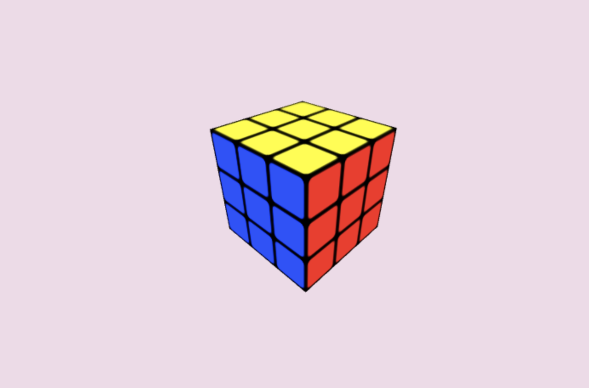
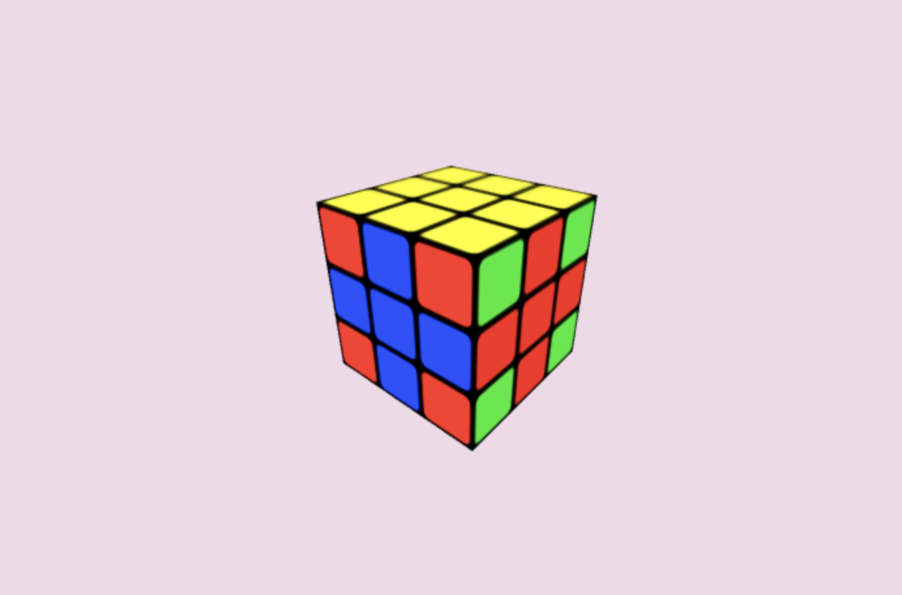
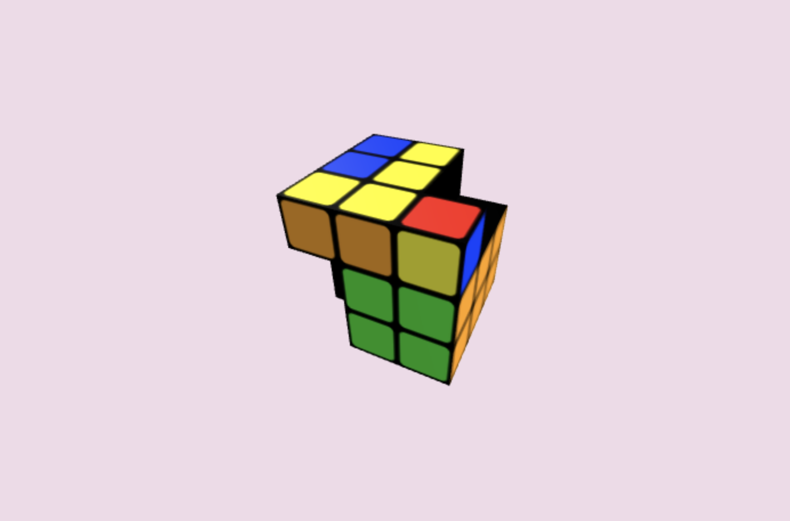

For my final project, I wanted to make an interactive Rubik's Cube.
My current demo:
Some of the concepts from this class that are being put into use with project are:
There were lots of difficulties trying to make this cube. The first hardship was actually making the cube. I like how stickerless Rubik's cubes look, but modeling the different parts of a stickerless cube is a lot more difficult than a stickered one. To get the stickered approach, I made some textures that were just colored squares with black borders to get the same product. Example:
Another interesting bug was trying to move the right pieces. The model is made up of many smaller pieces, so there were a lot to incorrectly target. This would result in lots of impossible configurations of the cube, such as:
After selecting the right pieces, things did not always turn out well... Pieces tended to vanish, and vanish and I don't know how/why.

A few days before the project was due I came to the realization that I had to start my cube
from (almost) scratch. The structure that I had built it on was incapable of handling so many turns and
compounded rotations. Instead of thinking of the cube in cubies, I needed to be able to access individual
colors and faces. So I completely redid the building of the cube, first loading in blank pieces to be
the cube model, and then loading in textured planes to represent the stickers of the cube.
I still don't have the animation quite figured out. However, with the black cubes rotating I hope that
you, the user, can see the vision of how it should be animating. What is most important is that there is a
modeled cube that can react to the turns that are input and accurately represent the state of the cube.
I really appreciate you taking the time to check out my page and see a cool project I worked on this semester. Thanks!